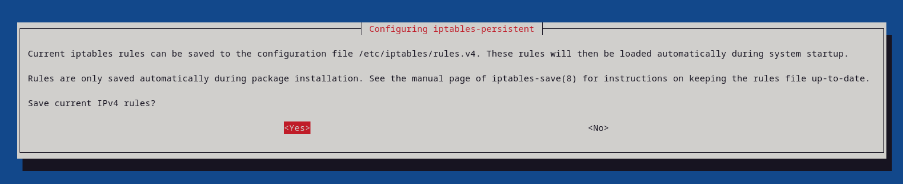

Nym Node Configuration
Basic Changes
Nym Node can be configured directly by editing the config file (config.toml) located at ~/.nym/nym-nodes/<ID>/config/config.toml (by default ~/.nym/nym-nodes/default-nym-node/config/config.toml) or through commands on the binary.
Node Description
Operators can add a description themselves to share more information about their nym-node publicly.
To add or change nym-node description is done by editing description.toml file located in ~/.nym/nym-nodes/<NODE_ID>/data/description.toml. After saving, don’t forget to reload and restart your node service or simply restart your nym-node if you run it without a service (not recommended).
Query description
Nodes description can be queried from API endpoint /api/v1/description or via Swagger API UI page /api/v1/swagger/#/Node/description.
curl -X 'GET' \
'http://<NODE_IP_ADDRESS>:8080/api/v1/description' \
-H 'accept: application/json'
# or for https reversed proxy or WSS setup
curl -X 'GET' \
'https://<HOSTNAME>/api/v1/description' \
-H 'accept: application/json'
Commands & Examples
Disable sharing of system hardware info with the network:
./nym-node run --id <ID> --deny-init --mode entry-gateway -w --expose-system-hardware false --expose-system-info false
Note: --expose-system-info false supersedes --expose-system-hardware false. If both are present with conflicting values, the system hardware will not be shown.
VPS Setup and Automation
Replace
<NODE>variable with type of node you run, preferablynym-node(depreciatednym-mixnode,nym-gatewayornym-network-requester).
Automating your node with nohup, tmux and systemd
Although it’s not totally necessary, it’s useful to have the Mix Node automatically start at system boot time. We recommend to run your remote operation via tmux for easier management and a handy return to your previous session. For full automation, including a failed node auto-restart and ulimit setup, systemd is a good choice.
Do any of these steps and run your automated node before you start bonding process!
nohup
nohup is a command with which your terminal is told to ignore the HUP or ‘hangup’ signal. This will stop the node process ending if you kill your session.
nohup ./<NODE> run <OTHER_FLAGS> # use all the flags you use to run your node
tmux
One way is to use tmux shell on top of your current VPS terminal. Tmux is a terminal multiplexer, it allows you to create several terminal windows and panes from a single terminal. Processes started in tmux keep running after closing the terminal as long as the given tmux window was not terminated.
Use the following command to get tmux.
| Platform | Install Command |
|---|---|
| Arch Linux | pacman -S tmux |
| Debian or Ubuntu | apt install tmux |
| Fedora | dnf install tmux |
| RHEL or CentOS | yum install tmux |
| macOS (using Homebrew | brew install tmux |
| macOS (using MacPorts) | port install tmux |
| openSUSE | zypper install tmux |
In case it didn’t work for your distribution, see how to build tmux from version control.
Running tmux
Now you have installed tmux on your VPS, let’s run a Mix Node on tmux, which allows you to detach your terminal and let your <NODE> run on its own on the VPS.
- Pause your
<NODE> - Start tmux with the command
tmux
- The tmux terminal should open in the same working directory, just the layout changed into tmux default layout.
- Start the
<NODE>again with a command:
./<NODE> run <OTHER_FLAGS> # use all the flags you use to run your node
- Now, without closing the tmux window, you can close the whole terminal and the
<NODE>(and any other process running in tmux) will stay active. - Next time just start your teminal, ssh into the VPS and run the following command to attach back to your previous session:
tmux attach-session
- To see keybinding options of tmux press
ctrl+band after 1 second?
systemd
To automate with systemd use this init service file by saving it as /etc/systemd/system/nym-node.service and follow the next steps.
- Open the service file in a text editor
nano /etc/systemd/system/nym-node.service
- Paste this config file, substitute
<USER>and<PATH>with your correct values and add all flags to run yournym-nodetoExecStartline:
[Unit]
Description=Nym Node
StartLimitInterval=350
StartLimitBurst=10
[Service]
User=<USER>
LimitNOFILE=65536
ExecStart=/home/<USER>/<PATH>/nym-node run # add all the flags you use to run your node
KillSignal=SIGINT
Restart=on-failure
RestartSec=30
[Install]
WantedBy=multi-user.target
Accepting T&Cs is done via a flag --accept-operator-terms-and-conditions added explicitly to nym-node run command every time. If you use systemd automation, add the flag to your service file’s ExecStart line.
- Save the file
Make sure your ExecStart <FULL_PATH> and run command are correct!
Example: If you have built nym in the $HOME directory on your server, your username is jetpanther, and node <ID> is puma, then the ExecStart line (command) in the script located in /etc/systemd/system/nym-mixnode.service for Nym Mixnode might look like this:
ExecStart=/home/jetpanther/nym/target/release/nym-node run --id puma.
Basically, you want the full /<PATH>/<TO>/nym-mixnode run --id <WHATEVER-YOUR-NODE-ID-IS>. If you are unsure about your /<PATH>/<TO>/<NODE>, then cd to your directory where you run your <NODE> from and run pwd command which returns the full path for you.
Following steps for Nym nodes running as systemd service
Once your init file is saved follow these steps:
- Reload systemctl to pickup the new unit file
systemctl daemon-reload
- Enable the newly created service:
systemctl enable nym-node.service
- Start your
<NODE>as asystemdservice:
service nym-node start
This will cause your <NODE> to start at system boot time. If you restart your machine, your <NODE> will come back up automatically.
Useful systemd commands
- You can monitor system logs of your node by running:
journalctl -u nym-node -f
- Or check a status by running:
systemctl status <NODE>.service
# for example systemctl status nym-node.service
- You can also do
service <NODE> stoporservice <NODE> restart.
Note: if you make any changes to your systemd script after you’ve enabled it, you will need to run:
systemctl daemon-reload
This lets your operating system know it’s ok to reload the service configuration. Then restart your <NODE>.
Connectivity Test and Configuration
During our ongoing testing events Fast and Furious we found out, that after introducing IP Packet Router (IPR) and Nym exit policy on embedded Network Requester (NR) by default, only a fragment of Gateways routes correctly through IPv4 and IPv6. We built a useful monitor to check out your Gateway (nym-node --mode exit-gateway) at harbourmaster.nymtech.net.
IPv6 routing is not only a case for gateways. Imagine a rare occasion when you run a mixnode without IPv6 enabled and a client will sent IPv6 packets through the Mixnet through such route:
[client] -> [entry-gateway] -> [mixnode layer 1] -> [your mixnode] -> [IPv6 mixnode layer3] -> [exit-gateway]
In this (unusual) case your mixnode will not be able to route the packets. The node will drop the packets and its performance would go down. For that reason it’s beneficial to have IPv6 enabled when running a mixnode functionality.
We recommend operators to configure their nym-node with the full routing configuration.
However, most of the time the packets sent through the Mixnet are IPv4 based. The IPv6 packets are still pretty rare and therefore it’s not mandatory from operational point of view to have this configuration implemented if you running only mixnode mode.
If you preparing to run a nym-node with all modes enabled in the future, this setup is required.
For everyone participating in Delegation Program or Service Grant program, this setup is a requirement!
Quick IPv6 Check
You can always check IPv6 address and connectivity by using some of these methods:
Test IPv6 methods
Test IPv6 methods
# locally listed IPv6 addresses
ip -6 addr
# globally reachable IPv6 addresses
ip -6 addr show scope global
# with DNS
dig -6 TXT +short o-o.myaddr.l.google.com @ns1.google.com
dig -t aaaa +short myip.opendns.com @resolver1.opendns.com
# https check
curl -6 https://ifconfig.co
curl -6 https://ipv6.icanhazip.com
# using telnet
telnet -6 ipv6.telnetmyip.com
Make sure to keep your IPv4 address enabled while setting up IPv6, as the majority of routing goes through that one!
Routing Configuration
While we’re working on Rust implementation to have these settings as a part of the binary build, to solve these connectivity requirements in the meantime we wrote a script network_tunnel_manager.sh to support the operators to configure their servers and address all the connectivity requirements.
Networking configuration across different ISPs and various operation systems does not have a generic solution. If the provided configuration setup doesn’t solve your problem check out IPv6 troubleshooting page. Be aware that you may have to do more research, customised adjustments or contact your ISP to change settings for your VPS.
The nymtun0 interface is dynamically managed by the exit-gateway service. When the service is stopped, nymtun0 disappears, and when started, nymtun0 is recreated.
The nymwg interface is used for creating a secure wireguard tunnel as part of the Nym Network configuration. Similar to nymtun0, the script manages iptables rules specific to nymwg to ensure proper routing and forwarding through the wireguard tunnel. The nymwg interface needs to be correctly configured and active for the related commands to function properly. This includes applying or removing iptables rules and running connectivity tests through the nymwg tunnel.
The script should be used in a context where nym-node is running to fully utilise its capabilities, particularly for fetching IPv6 addresses or applying network rules that depend on the nymtun0 and nymwg interfaces and to establish a WireGuard tunnel.
Before starting with the following configuration, make sure you have the latest nym-node binary installed and your VPS setup finished properly!
- Download
network_tunnel_manager.sh, make executable and run:
curl -L https://gist.githubusercontent.com/tommyv1987/ccf6ca00ffb3d7e13192edda61bb2a77/raw/74241cc06492b955e582052939090f57a285a65e/network_tunnel_manager.sh -o network_tunnel_manager.sh && \
chmod +x network_tunnel_manager.sh && \
./network_tunnel_manager.sh
- Make sure your
nym-nodeservice is up and running
- If you setting up a new node and not upgrading an existing one, keep it running and bond your node now. Then come back here and follow the rest of the configuration.
Run the following steps as root or with sudo prefix!
- Display IPv6:
- At this point you should see a
global ipv6address.
./network_tunnel_manager.sh fetch_and_display_ipv6
Correct ./network_tunnel_manager.sh fetch_and_display_ipv6 output:
Correct ./network_tunnel_manager.sh fetch_and_display_ipv6 output:
iptables-persistent is already installed.
Using IPv6 address: 2001:db8:a160::1/112 #the address will be different for you
operation fetch_ipv6_address_nym_tun completed successfully.
- Apply the rules for IPv4 and IPv6:
./network_tunnel_manager.sh apply_iptables_rules
- The process may prompt you if you want to save current IPv4 and IPv6 rules, choose yes.

- Check Nymtun IP tables:
- If there’s no process running it wouldn’t return anything.
- In case you see
nymtun0but not active, this is probably because you are setting up a new (never bonded) node and not upgrading an existing one.
./network_tunnel_manager.sh check_nymtun_iptables
Correct ./network_tunnel_manager.sh check_nymtun_iptables output:
Correct ./network_tunnel_manager.sh check_nymtun_iptables output:
iptables-persistent is already installed.
network Device: eth0
---------------------------------------
inspecting IPv4 firewall rules...
Chain FORWARD (policy DROP 0 packets, 0 bytes)
0 0 ufw-reject-forward all -- * * 0.0.0.0/0 0.0.0.0/0
0 0 ACCEPT all -- nymtun0 eth0 0.0.0.0/0 0.0.0.0/0
0 0 ACCEPT all -- eth0 nymtun0 0.0.0.0/0 0.0.0.0/0 state RELATED,ESTABLISHED
0 0 ACCEPT all -- nymtun0 eth0 0.0.0.0/0 0.0.0.0/0
0 0 ACCEPT all -- eth0 nymtun0 0.0.0.0/0 0.0.0.0/0 state RELATED,ESTABLISHED
0 0 ACCEPT all -- nymtun0 eth0 0.0.0.0/0 0.0.0.0/0
0 0 ACCEPT all -- eth0 nymtun0 0.0.0.0/0 0.0.0.0/0 state RELATED,ESTABLISHED
---------------------------------------
inspecting IPv6 firewall rules...
Chain FORWARD (policy DROP 0 packets, 0 bytes)
0 0 ufw6-reject-forward all * * ::/0 ::/0
0 0 ACCEPT all eth0 nymtun0 ::/0 ::/0 state RELATED,ESTABLISHED
0 0 ACCEPT all nymtun0 eth0 ::/0 ::/0
0 0 ACCEPT all eth0 nymtun0 ::/0 ::/0 state RELATED,ESTABLISHED
0 0 ACCEPT all nymtun0 eth0 ::/0 ::/0
0 0 ACCEPT all eth0 nymtun0 ::/0 ::/0 state RELATED,ESTABLISHED
0 0 ACCEPT all nymtun0 eth0 ::/0 ::/0
operation check_nymtun_iptables completed successfully.
- Apply the rules for WG routing:
./network_tunnel_manager.sh apply_iptables_rules_wg
- Apply rules to configure DNS routing and allow ICMP piung test for node probing (network testing):
./network_tunnel_manager.sh configure_dns_and_icmp_wg
- Check
nymtun0interface:
ip addr show nymtun0
Correct ip addr show nymtun0 output:
Correct ip addr show nymtun0 output:
# your addresses will be different
8: nymtun0: <POINTOPOINT,MULTICAST,NOARP,UP,LOWER_UP> mtu 1420 qdisc fq_codel state UNKNOWN group default qlen 500
link/none
inet 10.0.0.1/16 scope global nymtun0
valid_lft forever preferred_lft forever
inet6 2001:db8:a160::1/112 scope global
valid_lft forever preferred_lft forever
inet6 fe80::ad08:d167:5700:8c7c/64 scope link stable-privacy
valid_lft forever preferred_lft forever`
- Validate your IPv6 and IPv4 networking by running a joke test via Mixnet:
./network_tunnel_manager.sh joke_through_the_mixnet
- Validate your tunneling by running a joke test via WG:
./network_tunnel_manager.sh joke_through_wg_tunnel
- Note: WireGuard will return only IPv4 joke, not IPv6. WG IPv6 is under development. Running IPR joke through the mixnet with
./network_tunnel_manager.sh joke_through_the_mixnetshould work with both IPv4 and IPv6!
- Now you can run your node with the
--wireguard-enabled trueflag or add it to your systemd service config. Restart yournym-nodeor systemd service (recommended):
systemctl daemon-reload && systemctl restart nym-node.service
- Optionally, you can check if the node is running correctly by monitoring the service logs:
journalctl -u nym-node.service -f -n 100
Make sure that you get the validation of all connectivity. If there are still any problems, please refer to troubleshooting section.
Next Steps
There are a few more good suggestions for nym-node configuration, like Web Secure Socket or Reversed Proxy setup. These are optional and you can skip them if you want. Visit Proxy configuration page to see the guides.